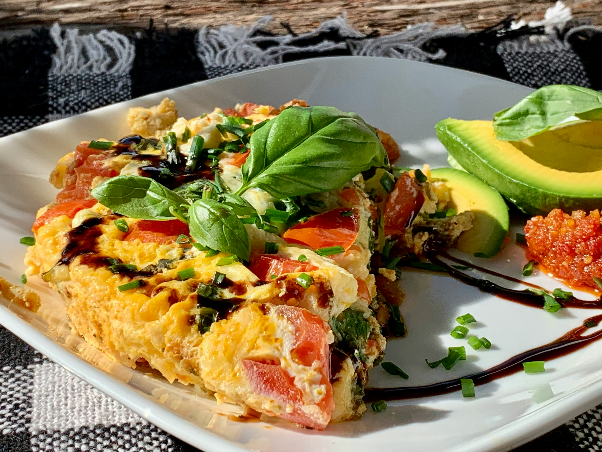

Spanish Omelette

Description
A Spanish omelette, or tortilla, is made with tender fried potatoes and onions cooked with eggs for a hearty
meal
or delicious tapa dish that everyone will enjoy.
Home cooks praise its adaptability for adding cheese, bacon, or extra veggies.
Ingredients
for 6 servings
- 100 ml olive oil
- 500 g potatoes, thinly sliced
- 4 large eggs
- 1 large onion, thinly sliced
- salt and pepper to taste
- 2 medium tomatoes - peeled, seeded, and coarsely chopped (Optional)
- 2 green onions, chopped (Optional)
Directions
- Heat oil over medium-high heat in a large skillet. Add potatoes and season lightly with salt and pepper;
cook, stirring occasionally, until golden brown and crisp, 10 to 14 minutes. Add onions; cook and stir
until
soft and beginning to brown, 6 to 8 minutes.
- Whisk eggs in a bowl; season with salt and pepper.
- Pour eggs into the skillet and stir gently to combine with potatoes and onion. Reduce the heat to low
and
cook until eggs begin to brown on the bottom, 4 to 5 minutes.
- Loosen omelette with a spatula. Invert a large plate over the pan, and carefully flip omelette out onto
the
plate. Slide omelette, uncooked-side down, back into the pan. Cook until eggs are set, 4 to 5 minutes.
- Serve warm, garnished with tomato and green onion.
Home